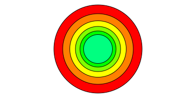
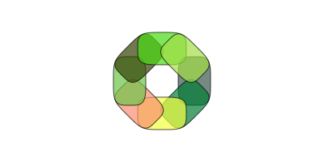
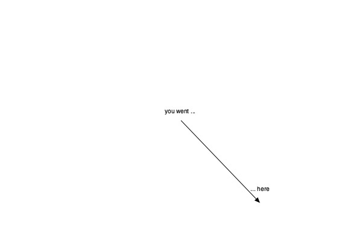

Transforms and matrices
For basic transformations of the drawing space, use scale(sx, sy), rotate(a), and translate(tx, ty).
translate(pos) (or translate(x, y)) shifts the current axes to pos (or by the specified amounts in x and y). It's relative and cumulative, rather than absolute:
origin()
for i in range(0, step=30, length=6)
sethue(HSV(i, 1, 1)) # from Colors
setopacity(0.5)
circle(0, 0, 40, :fillpreserve)
setcolor("black")
strokepath()
translate(50, 0)
end
scale(x, y) or scale(n) scales the current workspace by the specified amounts. Again, it's relative to the current scale, not to the document's original.
origin()
for i in range(0, step=30, length=6)
sethue(HSV(i, 1, 1)) # from Colors
circle(0, 0, 90, :fillpreserve)
setcolor("black")
strokepath()
scale(0.8, 0.8)
end
rotate() rotates the current workspace by the specified amount about the current 0/0 point. It's relative to the previous rotation, not to the document's original.
origin()
for i in 1:8
randomhue()
squircle(Point(40, 0), 20, 30, :fillpreserve)
sethue("black")
strokepath()
rotate(π/4)
end
To return home after many changes, you can use setmatrix([1, 0, 0, 1, 0, 0]) to reset the matrix to the default. origin() resets the matrix then moves the origin to the center of the page.
rescale() is a convenient utility function for linear interpolation (also called a "lerp").
Luxor.scale — Functionscale(x, y)Scale workspace by x and y.
Example:
scale(0.2, 0.3)scale(f)Scale workspace by f in both x and y.
Luxor.rotate — Functionrotate(a::Float64)Rotate workspace by a radians clockwise (from positive x-axis to positive y-axis).
Luxor.translate — Functiontranslate(point)
translate(x::Real, y::Real)Translate the workspace to x and y or to pt.
Scaling of lines
Line thicknesses are not scaled. For example, with a line thickness set by setline(1), lines drawn before and after scale(2) will be the same thickness. If you want line thicknesses to respond to the current scale, so that after say setline(1), lines change thickness after calls to scale(n), you could define your own strokeraw() function that calls the cairo_stroke primitive directly:
import Cairo
function strokeraw()
ccall((:cairo_stroke, Cairo._jl_libcairo), Nothing, (Ptr{Nothing},), Luxor.get_current_cr().ptr)
endMatrices and transformations
In Luxor, there's always a current matrix. It's a six element array:
\[\begin{bmatrix} 1 & 0 & 0 \\ 0 & 1 & 0 \\ \end{bmatrix}\]
which is usually handled in Julia/Cairo/Luxor as a simple vector/array:
julia> getmatrix()
6-element Array{Float64,1}:
1.0
0.0
0.0
1.0
0.0
0.0transform(a) transforms the current workspace by 'multiplying' the current matrix with matrix a. For example, transform([1, 0, xskew, 1, 50, 0]) skews the current matrix by xskew radians and moves it 50 in x and 0 in y.
function boxtext(p, t)
sethue("grey30")
box(p, 30, 50, :fill)
sethue("white")
textcentered(t, p)
end
for i in 0:5
xskew = tand(i * 5.0)
transform([1, 0, xskew, 1, 50, 0])
boxtext(O, string(round(rad2deg(xskew), digits=1), "°"))
endgetmatrix() gets the current matrix, setmatrix(a) sets the matrix to array a.
Luxor.getmatrix — Functiongetmatrix()Get the current matrix. Returns an array of six float64 numbers:
xx component of the affine transformation
yx component of the affine transformation
xy component of the affine transformation
yy component of the affine transformation
x0 translation component of the affine transformation
y0 translation component of the affine transformation
Some basic matrix transforms:
- translate
transform([1, 0, 0, 1, dx, dy]) shifts by dx, dy
- scale
transform([fx 0 0 fy 0 0]) scales by fx and fy
- rotate
transform([cos(a), -sin(a), sin(a), cos(a), 0, 0]) rotates around to a radians
rotate around O: [c -s s c 0 0]
- shear
transform([1 0 a 1 0 0]) shears in x direction by a
shear in y direction by a: [1 a 0 1 0 0]
- x-skew
transform([1, 0, tan(a), 1, 0, 0]) skews in x by a
- y-skew
transform([1, tan(a), 0, 1, 0, 0]) skews in y by a
- flip
transform([fx, 0, 0, fy, centerx * (1 - fx), centery * (fy-1)]) flips with center at centerx/centery
- reflect
transform([1 0 0 -1 0 0]) reflects in xaxis
transform([-1 0 0 1 0 0]) reflects in yaxis
When a drawing is first created, the matrix looks like this:
getmatrix() = [1.0, 0.0, 0.0, 1.0, 0.0, 0.0]When the origin is moved to 400/400, it looks like this:
getmatrix() = [1.0, 0.0, 0.0, 1.0, 400.0, 400.0]To reset the matrix to the original:
setmatrix([1.0, 0.0, 0.0, 1.0, 0.0, 0.0])Luxor.setmatrix — Functionsetmatrix(m::Array)Change the current matrix to matrix m. Use getmatrix() to get the current matrix.
Luxor.transform — Functiontransform(a::Array)Modify the current matrix by multiplying it by matrix a.
For example, to skew the current state by 45 degrees in x and move by 20 in y direction:
transform([1, 0, tand(45), 1, 0, 20])Use getmatrix() to get the current matrix.
Luxor.crossproduct — Functioncrossproduct(p1::Point, p2::Point)This is the perp dot product, really, not the crossproduct proper (which is 3D):
Luxor.blendmatrix — Functionblendmatrix(b::Blend, m)Set the matrix of a blend.
To apply a sequence of matrix transforms to a blend:
A = [1 0 0 1 0 0]
Aj = cairotojuliamatrix(A)
Sj = scalingmatrix(2, .2) * Aj
Tj = translationmatrix(10, 0) * Sj
A1 = juliatocairomatrix(Tj)
blendmatrix(b, As)Luxor.rotationmatrix — Functionrotationmatrix(a)Return a 3x3 Julia matrix that will apply a rotation through a radians.
Luxor.scalingmatrix — Functionscalingmatrix(sx, sy)Return a 3x3 Julia matrix that will apply a scaling by sx and sy.
Luxor.translationmatrix — Functiontranslationmatrix(x, y)Return a 3x3 Julia matrix that will apply a translation in x and y.
Use the getscale(), gettranslation(), and getrotation() functions to find the current values of the current matrix. These can also find the values of arbitrary 3x3 matrices.
Luxor.getscale — Functiongetscale(R::Matrix)
getscale()Get the current scale of a Julia 3x3 matrix, or the current Luxor scale.
Returns a tuple of x and y values.
Luxor.gettranslation — Functiongettranslation(R::Matrix)
gettranslation()Get the current translation of a Julia 3x3 matrix, or the current Luxor translation.
Returns a tuple of x and y values.
Luxor.getrotation — Functiongetrotation(R::Matrix)
getrotation()Get the rotation of a Julia 3x3 matrix, or the current Luxor rotation.
\[\begin{bmatrix} a & b & tx \\ c & d & ty \\ 0 & 0 & 1 \\ \end{bmatrix}\]
The rotation angle is atan(-b, a) or atan(c, d).
You can convert between the 6-element and 3x3 versions of a transformation matrix using the functions cairotojuliamatrix() and juliatocairomatrix().
Luxor.cairotojuliamatrix — Functioncairotojuliamatrix(c)Return a 3x3 Julia matrix that's the equivalent of the six-element matrix in c.
Luxor.juliatocairomatrix — Functionjuliatocairomatrix(c)Return a six-element matrix that's the equivalent of the 3x3 Julia matrix in c.
World position
If you use translate() to move the origin to different places on a drawing, you can use getworldposition() to find the "true" world coordinates of points. In the following example, we temporarily translate to a random point, and "drop a pin" that remembers the new origin in terms of the drawing's world coordinates. After the temporary translation is over, we have a record of where it was.
origin()
@layer begin
translate(0.7rand(BoundingBox()))
pin = getworldposition()
end
label("you went ... ", :n, O, offset = 10)
label("... here", :n, pin, offset = 20)
arrow(O, pin)
Luxor.getworldposition — Functiongetworldposition(pt::Point = O;
centered=true)Return the world coordinates of pt.
The default coordinate system for Luxor/Cairo is that the top left corner is 0/0. If you use origin(), everything moves to the center of the drawing, and this function with the default centered option assumes an origin() function. If you choose centered=false, the returned coordinates will be relative to the top left corner of the drawing.
origin()
translate(120, 120)
@show currentpoint() # => Point(0.0, 0.0)
@show getworldposition() # => Point(120.0, 120.0)